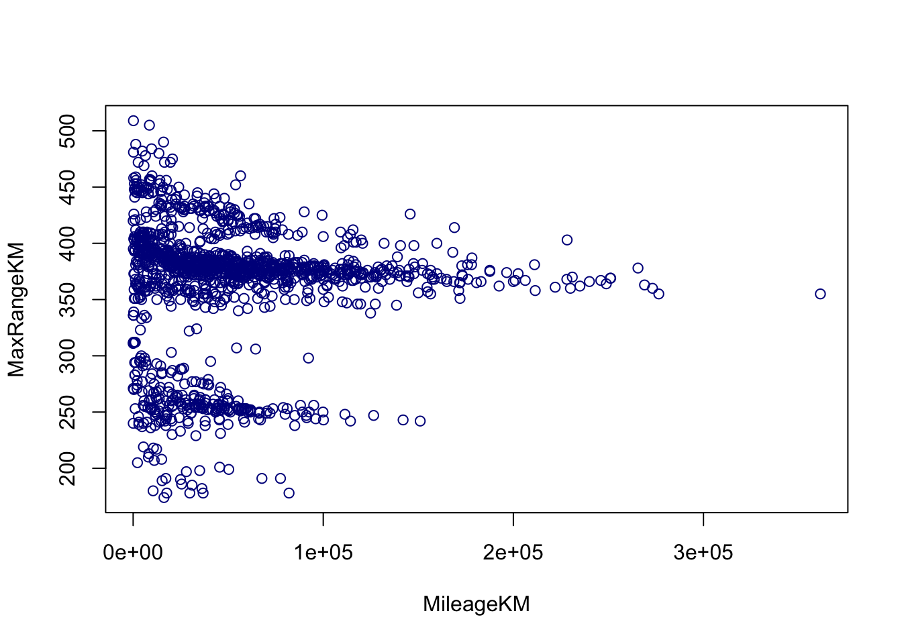
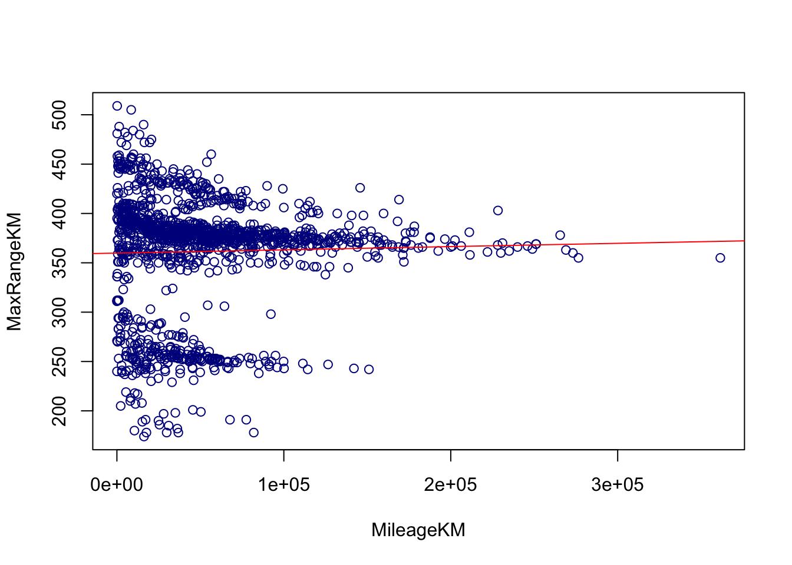
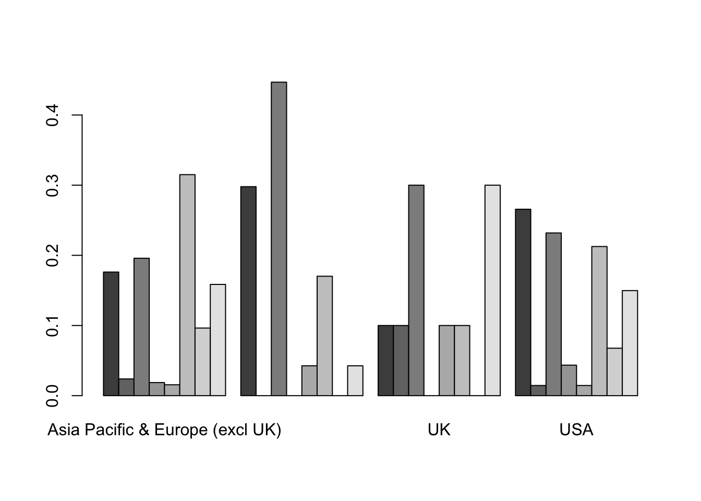

4 Visualization using base graphics
The base graphics often provide a very simple way for students to get plots quickly and explore data. We will continue using the cleanTeslaBattery data. Load it now and view it.
4.1 Histograms and boxplots
One wonderful thing about R is how intuitive the functions are, if you want a mean, the command is mean, if you want a boxplot, the command is ‘boxplot’.
Run the command ‘boxplot(cleanTeslaBattery$MaxRangeKM)’. You should get the following:
boxplot(cleanTeslaBattery$MaxRangeKM) The x- and y-axis labels, main title, as well as color can be set using optional variables, xlab, ylab, main and color, respectively. Modify your command to
The x- and y-axis labels, main title, as well as color can be set using optional variables, xlab, ylab, main and color, respectively. Modify your command to boxplot(cleanTeslaBattery$MaxRangeKM, xlab = "All", ylab = "KM", main = "Max Range", col = "green"). R has many other colors built in and also accepts hexadecimals. Search the web to find some other possible colors to modify your graph.
Replacing boxplot() with hist will give the expected effect. Try it on one of the other quantitative variables.
- Note that histograms have an optional argument to control how many bins called breaks. Try adding the option ‘breaks = 50’
- Set the number of breaks to 5, notice anything strange?
- Set your histogram to another color
One other feature that is nice is that comparisons between quantitative variables can easily be done as well. Suppose we want to compare the maximum range based on how frequently they supercharge their batteries. Enter the command
boxplot(MaxRangeKM ~ SuperchargeFreq, data = cleanTeslaBattery, las = 2)
- Note the relational notation
y ~ x - In many functions we can specify the dataset to avoid extra typing
- The
lasargument specifies turning the axis labels 90 degrees - The optional axis labels are as before
Colors can still be specified, but now we need a list of colors, one for each box. Add the optional argument
col = heat.colors(8). Note you must specify one for each category. There are many color palettes. You can view some with the command?colors.Teaching tip: One of the most common problems students run into here is not putting the variables in the correct order in the ‘y ~ x’
4.2 Scatterplots
Scatterplots follow a very similar syntax as doing side-by-side boxplots, but using the plot function and replacing the qualitative explanatory variable with a quantitative one. Let’s explore the effect of Mileage (MileageKM) and the Maximum Range (MaxRangeKM).
plot(MaxRangeKM ~ MileageKM, data = cleanTeslaBattery, col = "darkblue")
Note that the type of point can be controlled using the optional pch = 2 command and changing the number for different point types. Color and labels are done as before. Try adjusting your colors and labelling your plot.
Another nice alternative for large datasets is the smoothScatter, however it doesn’t support the specification of data and will require explicitly referring to the x and y using the data frame name and ‘$’ symbol. Try it if you are interested.
Clearly this graph shows multiple trends due to the different battery sizes, so we would want to separate these out separately for regression or use a more advanced regression model. For simplicity we are going to add a regression line without accounting for the car model.
Regression lines are implemented using the followng process:
- Fit and save the model to the data using
lm()(x and y are specified as in the plot). This model is used for all other steps. - Add the line to the scatterplot that has already been created using
abline()applied to the model you have saved. Colors for the line can be specified as before. - Summarize the model using
summary().
Try it.
plot(MaxRangeKM ~ MileageKM, data = cleanTeslaBattery, col = "darkblue")
line = lm(MaxRangeKM ~ MileageKM, data = cleanTeslaBattery)
abline(line, col = "red")
summary(line)
Call:
lm(formula = MaxRangeKM ~ MileageKM, data = cleanTeslaBattery)
Residuals:
Min 1Q Median 3Q Max
-186.380 -4.404 14.744 28.588 149.153
Coefficients:
Estimate Std. Error t value Pr(>|t|)
(Intercept) 3.598e+02 2.389e+00 150.597 <2e-16 ***
MileageKM 3.313e-05 3.442e-05 0.962 0.336
---
Signif. codes: 0 '***' 0.001 '**' 0.01 '*' 0.05 '.' 0.1 ' ' 1
Residual standard error: 58.81 on 1336 degrees of freedom
(1 observation deleted due to missingness)
Multiple R-squared: 0.0006928, Adjusted R-squared: -5.522e-05
F-statistic: 0.9262 on 1 and 1336 DF, p-value: 0.336Teaching tip: students frequently forget to create the plot first.The correlation can be computed using the cor function. Look up how to use it using ?cor and try it.
4.3 Bar graphs
Categorical data isn’t much harder, but does require a preprocessing step for base graphics. Let’s create a boxplot of the Supercharging Frequency. We will go straight to grouped bar plots. Let’s summarize the relationship between supercharging frequency and the location. This is done in three steps:
- tabulate (using
table, stored astble) - compute conditional percentages (
prop.table, stored asptable) - plot (
barplot)
Try it:
tble = table(cleanTeslaBattery$SuperchargeFreq, cleanTeslaBattery$Location)
ptable = prop.table(tble,2)
barplot(ptable, beside = TRUE) Note the organization of the table and the relationship between the rows and columns.
We can also add a legend and a location with the options legend.text = TRUE and args.legend = list(x = "topright").
Try adding them to your plot.
Note, there are many options for the placement of the legend other than “topright” that you may want to use if the legend overlaps your bars. These include “bottomright”, “bottom”, “bottomleft”, “left”, “topleft”, “top”, “topright”, “right”, and “center.”
Set the main title and colors (the number of colors should be the same as the number of rows in the table). A quick way to get the number of colors is to count the number of levels of a factor. You can replace the count with length(levels(vblname)), and substitute your ’vblname`.
A bar plot for a single variable can be accomplished by only passing in one variable. Try it on one of the other categorical variables.